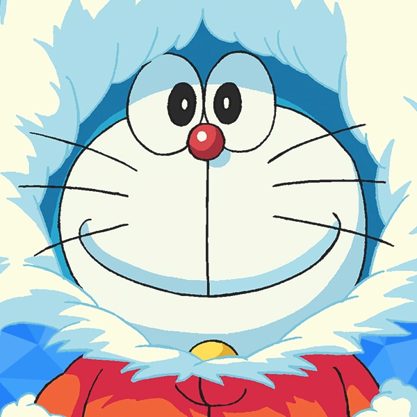
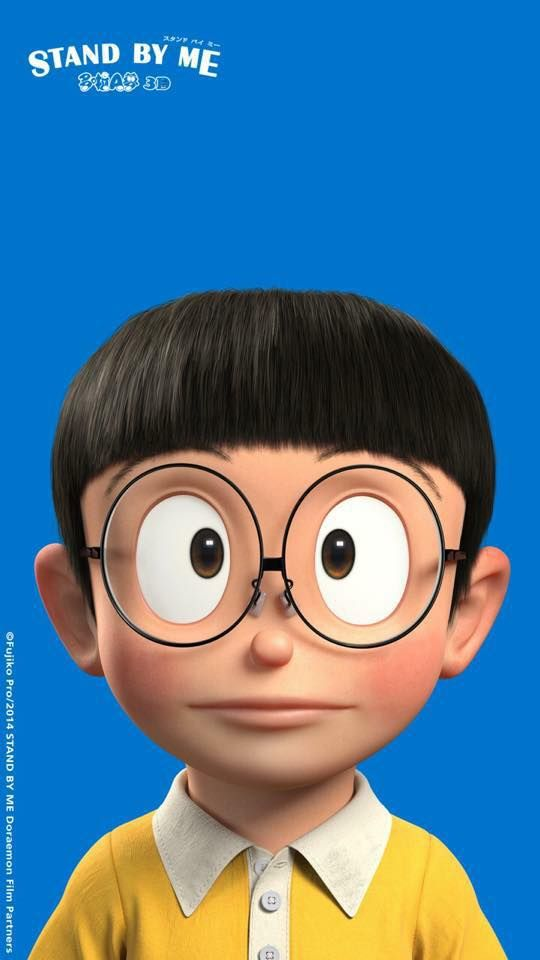

DORAEMON Character
ตัวละครในเรื่องโดเรมอน
1.โดราเอมอน หรือ โดเรมอน เป็นหุ่นยนต์แมวจากโลกอนาคตกลับมาช่วยเหลือโนบิตะ โดยเซวาชิผู้เป็นเหลนของโนบิตะเป็นผู้ส่งมาดูแลโนบิตะ โดเรมอนกลัวหนูมากเพราะเคยโดนหนูกัดหูจนต้องตัดหูทิ้ง ชอบกินโดรายากิเนื่องจากตอนที่อยู่โลกอนาคตยังไม่มาหาโนบิตะ โดเรมอนได้รับโดรายากิกับแมวผู้หญิงตัวหนึ่งซึ่งน่ารักมาก โดเรมอนจึงชอบเป็นพิเศษและเขาจะมีอารมณ์โกรธทันทีเมื่อมีใครเรียกเขาว่า "แรคคูน" หรือ "ทานุกิ"

2. เด็กชายไม่เอาไหน ทั้งเรื่องการเรียนและกีฬา มีนิสัยขี้เกียจและชอบนอนกลางวัน สอบก็ได้ 0 คะแนนทุกครั้งแต่ก็มีความสามารถด้านยิงปืนและพันด้าย เป็นคนมีน้ำใจและมีนิสัยดี ชอบชิซุกะมานานและมักถูกไจแอนท์กับซูเนโอะรังแกเป็นประจำแต่ก็เปลี่ยนเป็นคนละคนเมื่อโดเรมอนไม่ได้อยู่กับเขาแล้ว เขาจะมีอารมณ์ไม่พอใจเมื่อเดคิสุงิอยู่ใกล้กับชิซุกะเพราะคิดว่าชิซุกะแอบชอบเดคิสุงิแต่ถึงอย่างไรก็ตามในอนาคตก็ได้แต่งงานกับโนบิตะอยู่ดีแต่ถ้าเรื่องของวิเศษโนบิตะจะปิ้งไอเดียอะไรพิเรนพิเรนหรืออะไรที่มีประโยชน์นั้นก็แล้วแต่ที่โนบิตะคิดได้
3.ชิซูกะ เด็กสาวน้ำใจดี เธอเป็นที่รักของทุกคน ชอบการอาบน้ำเป็นอย่างมากและชอบเล่นไวโอลิน (เล่นได้ห่วยแตกมาก) แต่มีความสามารถด้านเปียโน เธอเป็นเด็กสาวที่โนบิตะแอบชอบและชิซุกะยังชอบกินสปาเก็ตตี้และมันเผาเป็นพิเศษ ในอนาคตเธอก็ได้แต่งงานกับโนบิตะ
4.เด็กอ้วนหัวโจกประจำกลุ่ม ชอบแกล้งโนบิตะเป็นประจำแต่ก็มีหลายครั้งที่แสดงความผูกพันกับโนบิตะ (อยากขอร้องให้ช่วย) ฝันอยากจะเป็นนักร้องแต่เสียงไม่เอาไหนแต่บางครั้งเสียงไม่เอาไหนของเขาก็ช่วยทำให้สถานการณ์ที่คับขันให้คลี่คลายได้เพราะคงไม่มีใครคนไหนที่สามารถทนเสียงของเขาได้และเขาเป็นคนที่รักเพื่อนพ้องมากและยังชอบแย่งหนังสือการ์ตูนกับของที่ซึเนโอะเอามาอวดเป็นประจำแถมยังทำอาหารได้ห่วยอีกตั่งหาก
5.โดรามี่ หุ่นยนต์แมวจากอนาคต เธอเป็นน้องสาวของโดเรมอน สวยน่ารักแต่ประสิทธิภาพสูงกว่าโดเรมอนทุกด้านเช่น ความรู้ วิธีใช้ของวิเศษ อาศัยอยู่ที่โลกศตวรรษที่ 22 ของกินที่ชอบที่สุดคือขนมปังเมล่อน ไม่ค่อยปรากฏตัวให้พบเห็น เธอจะปรากฏตัวเมื่อโดเรมอนเรียกขอความช่วยเหลือหรือสถานการณ์ที่โดเรมอนไม่สามารถควบคุมได้ บางครั้งก็มาช่วยเหลือโนบิตะตอนที่โดเรมอนไม่อยู่
6.เด็กขี้อวดประจำโรงเรียน ฐานะดีและเป็นเพื่อนซี้กับไจแอนท์ ผู้มีฐานะทางบ้านดีที่สุดในกลุ่ม มีนิสัยชอบคุยโม้ ชอบพูดยกยอ ขี้ประจบและชอบเอาของมาอวดให้เพื่อนๆ อิจฉาแต่ก็มักโดนไจแอนท์แย่งไปตลอดแต่ก็พร้อมที่จะเจออันตรายกับพวกเพื่อนๆ ได้ในตอนที่เป็นภาพยนตร์ มักจะวางแผนกับไจแอนท์เพื่อแกล้งโนบิตะ